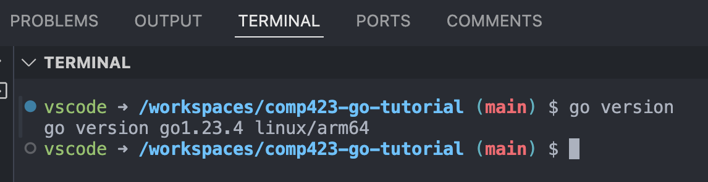
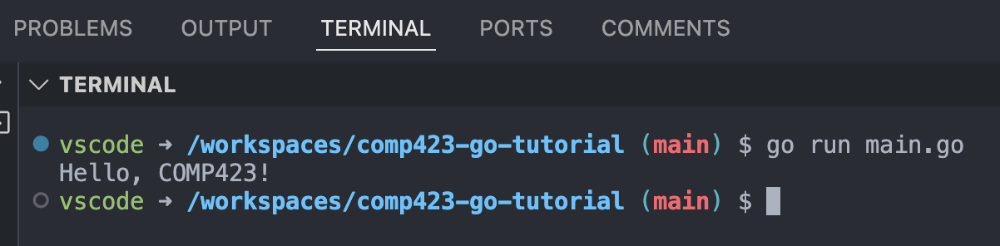

Setting up a dev container for Go
- Primary author: Colby Eagan
- Reviewer: Lily Moore
Prerequisites
- Git and a GitHub Account.
- Visual studio code: Download and install it from here.
- Install Docker here.
Creating your local and remote repository
- Inspiration taken from COMP423 Starting a Static Website tutorial.
(A) Make a directory to setup your repository
(1) Open the terminal on your computer
(2) Create a new directory for your project by using the mkdir command, then switch into your new directory by using the cd command.
(3) Initialize a new Git repo:
(4) Create a README.md file
echo "# Tutorial for setting up a go devcontainer and programming in go. https://colbyeagan.github.io/comp423-course-notes/tutorials/go-setup/" > README.md
git add README.md
git commit -m "Initial commit with README"
(B) Create a remote repo on github
(1) Log into GitHub and go to the Create a New Repository tab.
(2) Name your repository comp423-go-tutorial and add a description. Make your repository public.
(3) Do not initialize with a README.
(4) Click on "Create Repository".
(C) Next, conect your Local and Remote Repo
(1) Add GitHub repo as remote
Warning
Replace the parts of the link between <> with your username!
(2) Push your local commits to the remote repository. Ensure that your primary branch is named main.
Note
If there are issues with your repo, use git status and git log to debug.
Setting up the Development Environment
- Inspiration taken from COMP423 Starting a Static Website tutorial.
(1) Open the comp423-go-tutorial repository you just made in VS Code.
(2) Install "Dev Containers" extension for VS Code.
(3) Create a .devcontainer directory in the root of your project folder and add the file
.devcontainer/devcontainer.json
(4) Add the proper contents to the devcontainer.json file
{
"name": "COMP423 Go Tutorial - Go Development",
"image": "mcr.microsoft.com/devcontainers/go:latest",
"customizations": {
"vscode": {
"settings": {},
"extensions": [
"golang.go"
]
}
},
"postCreateCommand": "go mod init comp423 && go install"
}
name describes the name for your dev container
image specifies what kind of programming environment to setup for your dev container
customizations configures VS Code by installing certain language support extensions
postCreateCommand runs commands after creating the container to install necesarry parts of the dev environment. In this case we wish to add a go mod file to the directory and install go.
Go mod subcommand
We take care of running go mod in the postCreateCommand. This means the user does not have to worry about creating the go.mod file which manages go dependencies. If you would prefer more control you can remove this command from the postCreateCommand line and run it yourself after creating the dev container.
(5) Reopen your project in your devcontainer by pressing f1 and typing (and selecting) "Dev Containers: Reopen in Container".
(6) Run go version. Your terminal should show something like this:

Note
You may have a different version of go. This tutorial installs the latest version which may change overtime.
Printing "Hello COMP423"
Now it is time to create a go file, add the contents for our first go program, and then run it!
(1) Begin by creating a main.go file in your main directory (comp423-go-tutorial)
(2) In the main.go file, add the contents
(3) Save this file and then in your terminal run
Alternativley, we can build and then run our program in two seperate commands.go run vs build
The go subcommand go build is similar to gcc in the C programming language in that it compiles into an executable binary file which is then run in another step. go run on the other hand compiles into a binary file, runs it immediatley, and then removes this binary executable when the program finishes. This is a useful for running go programs quicly to see the output.
Your console should look like this!

Note
The "go run" command compiles and runs in one step!
Push your changes to the remote repository
(1) Save all files and add your changes
(2) Commit with a meaningful message:
(3) Push your changes to the remote repo
(4) Go to github and check your remote repo to ensure changes have pushed If changes havent pushed, make sure that your remote url is accurate.
Conclusion
This is all for now! You have just created a git repo, hosted it on github, made a dev container, configrued it for go, and ran a go program within the container!
References
[1] K. Jordan, “Starting a static website project with MkDocs,” COMP423, https://comp423-25s.github.io/resources/MkDocs/tutorial/ (accessed Jan. 26, 2025).